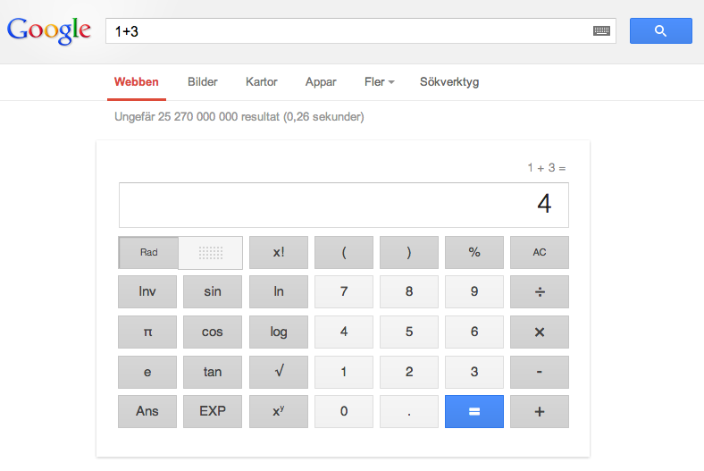

Programmeringsrepetition - Variabel
En variabel ses som en tillfällig lagringsplats för ett värde
Variablerna ges unika namn så att man kan referera till dem senare i sin kod
casesensitive d.v.s. message != Message
BILD på ice creame stand?
// Variabel i javascript
var number = 10;
number = number + 20;
alert(number); // Vad innehåller tal för värde?
// Variabel i PHP
$tal = 10;
$tal = $tal + 10;
echo($tal); // Vad kommer skrivas ut?
Textsträngar
Textsträngar eller string kan bestå av noll eller flera tecken
Det finns enkla sätt att slå ihop (konkatenering), räkna antal tecken, m.m.
// textsträngar
$sport = "fotboll";
$team = "Tottenham Hotspur";
// I php använder man punkttecken för att slå ihop strängar
$complete_message = $team ." är bra på " .$sport;
echo($complete_message); // Skriver ut: Tottenhamn Hotspur är bra på fotboll
// i Javascript använder man plustecken för att slå ihop strängar, i PHP punkttecken
alert("Hejsan" +" " +"Kerstin");
Vad kommer skrivas ut.
$pris = 400;
$enhet = "kronor"
$moms = 0.25
echo("Varan kostar " .($pris + ($pris * $moms)) .$enhet)
HTML-formulär - Att låta användaren påverka applikationen
För att låta användare "Posta" data till en webbapplikation (din php-skript)
använder man HTML-formulär
BILD på olika typer av formulär
BILD på htmlkod
BILD PÅ HUR ETT FORMULÄR ARBETAR
DEMO
- Skapa ett HTML-formulär
- Använd PHP för att skriva ut det användaren matar in
1) Skapa ett HTML-formulär
2) Visa några olika kontroller - Koncentrera sig till ett textfield
3) $_POST, posta till en annan sida
4) Skillnad mellan GET och POST
5) Posta till samma sida - Problem ? Vi måste titta OM värdet är satt = Selection
Selectioner - PHP
Låta användaren styra hur vår webbapplikation ska bete sig.
"OM användaren matar in ett matematiskt uttryck ska en miniräknare visas"

OM == IF
IF-SATS
if-sats används för att kontroller om något är sant eller falskt
$tal = 3;
if($tal == 10) {
echo("Talet är tio");
}
elseif($tal == 5) {
echo("Talet är fem");
}
else {
echo("Talet är varken fem eller tio");
}
$_POST och IF
$text = $_POST["text"];
if($text != "") {
// $text är satt
}
else {
// $text är INTE satt
echo "Text är inte satt";
}
BILD PÅ HTML-kod
DEMO
Addera två av användaren inskrivna tal
1) Två input fält - (använd ej && -- Ge ett felmeddelande om inputen är tom annars lägg ihop dem
2) vad händer om användaren skriver en sträng? - Kolla av om det är ett nummer (visa hur jag hittar det via google)
3) utöka med isset och == ""
4) vad händer om användaren skriver en sträng? - Kolla av om det är en sträng is_numeric
5) Men om jag vill kolla flera saker OM detta och OM detta...
Logiska uttryck
- > - Större än
- >= - Större än, lika med
- < - Mindre än
- <= - Mindre än, lika med
- == - Lika med
- != - Ej lika med, skilt från
Du gissar
$tal1 = 10;
$tal2 = 15
$tal2 = 10;
if($tal1 <= $tal2) {
echo("Första vilkoret stämmer");
if($tal2 != $tal3) {
echo("Andra vilkoret stämmer");
}
}
Logiska operatorer
// Kombinera flera vilkor
if ($tal > $tal2 && $tal < $tal3)
if ($tal > $tal2 || $tal < $tal3)
Du gissar
GÖT TAL
itteration - om och om och om igen
När man skriver kod är det vanligt att man vill göra något flera gånger.
T.ex. skapa en tabell med 10 rader och 5 kolumner
T.ex. skriva ut saker i en lista/array
T.ex. göra någonting till ett visst tillstånd uppnås
Man pratar om loopar. Vi ska titta på tre olika varianter:
- for-loop
- foreach-loop
- while-loop
Vanligast är for-loopen
for-loopen har man till att upprepa kod ett visst antal gånger
Vi vill skriva ut "hello World!" 10 ggr
Vi vill bara skriva koden echo("Hello World!") en gång
// for-loop
// loopen körs lika många gånger
// 1. Vi skapar en variabel $i och sätter den till 0
// 2. Vi skapar ett vilkor (så läng $i är mindre än 10)
// 3. För varje gång loopen går öka $i med 1
for($i = 0; $i < $10; $i++) {
echo("Hello World!");
}
DEMO
Jag vill skapa en tabell i HTML med 100 rader via en for-loop
while-loop
while-loopen är egentligen en enklare variant av loop.
Du kommer stöta på den när vi börjar jobba med wordpress
Jag vill skapa en tabell i HTML med 100 rader via en while-loop
DEMO
Se inspelat demo som tar upp många av de delar vi pratat om
 Detta verk är licensierat under en
Creative Commons Erkännande-IckeKommersiell-DelaLika 3.0 Unported Licens.
Detta verk är licensierat under en
Creative Commons Erkännande-IckeKommersiell-DelaLika 3.0 Unported Licens.